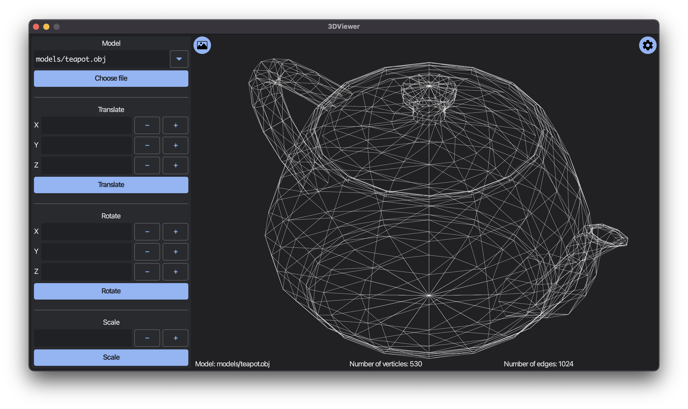
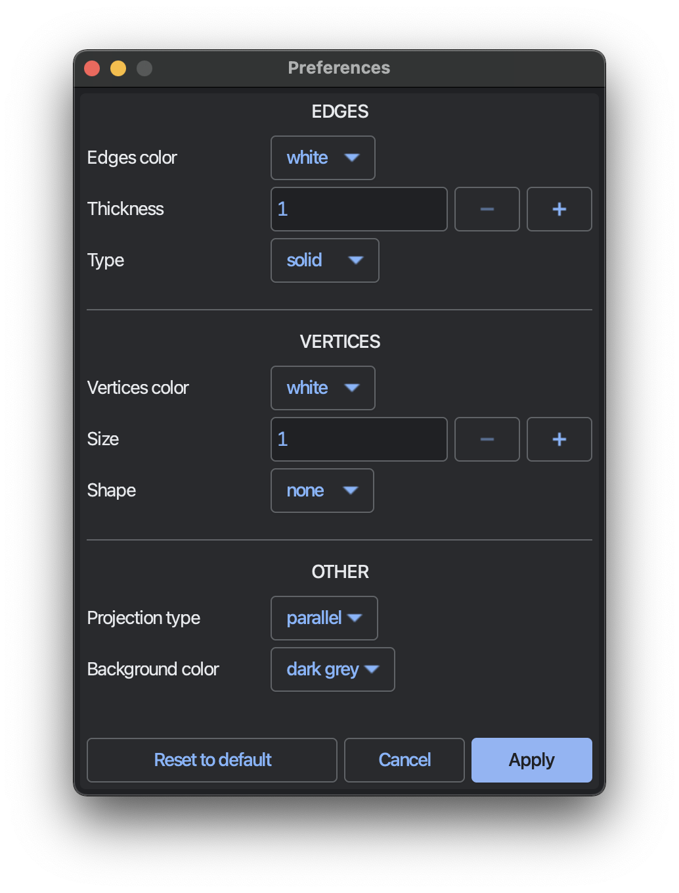

Welcome to 3DViewer_v1.0 manual page!
Look at our beautifull graphic user interface:

- Input OBJ-file model name or just select one from drop-down list. Press Choose file to start view 3D model!
- In the bottom of the window you can see basic info about a model: Model name, Number of vertices and Number of edges.
- Our 3DViewer supports 3 standart model transformations, so you can:
- Translate model along X, y and Z axes.
- Rotate model also along X, y and Z axes.
- Scale model in specified factor.
- Our application supports Preferences window. To access it you need to press button with shaft in top rigth corner.

- As you can see from screenshot above, you can change many settings, including color of lines and shape of verticles.
- You can also take a screenshot of current model by pressing on the top left button. All screenshots will be saved in ./screenshot/ directory in .bmp and .jpeg formats.